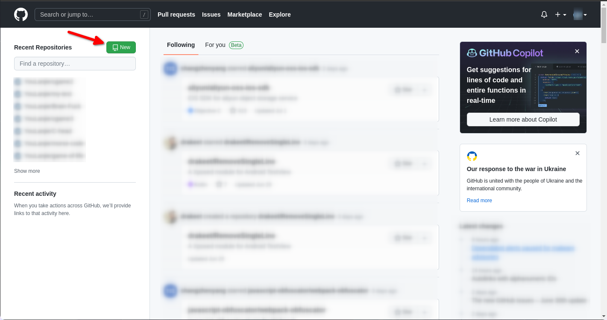
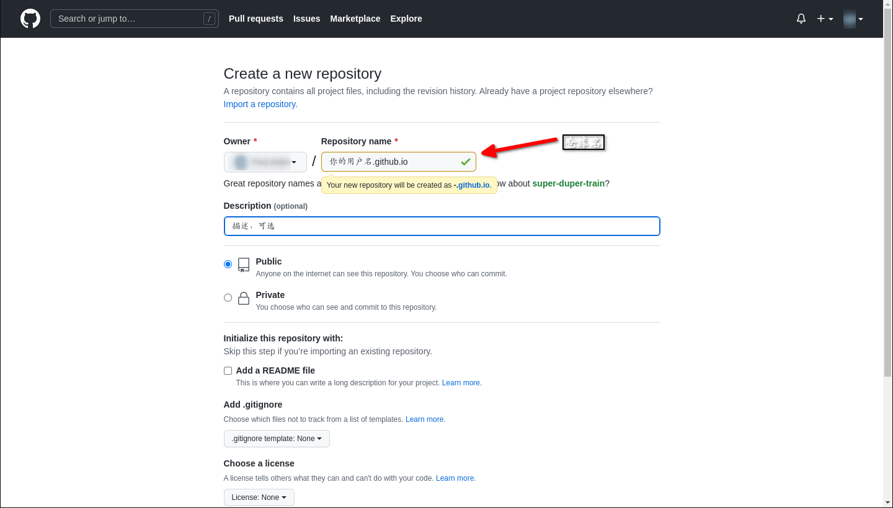
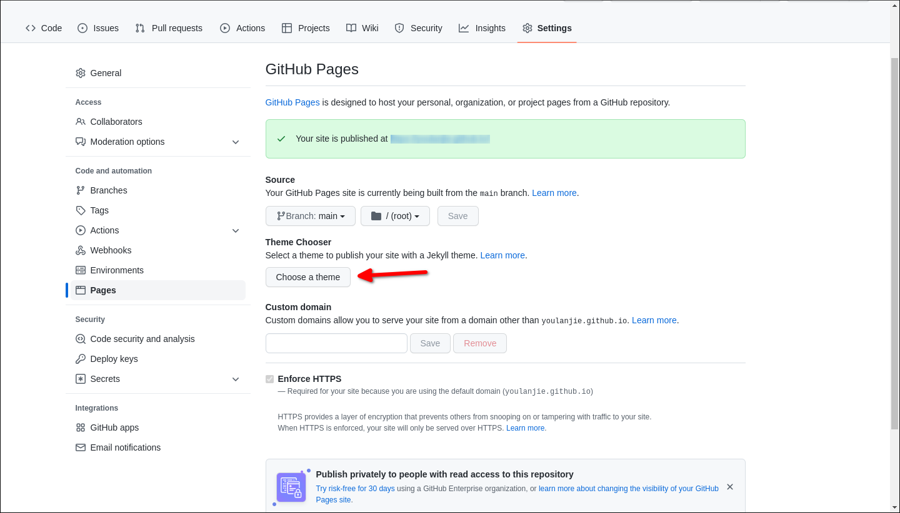
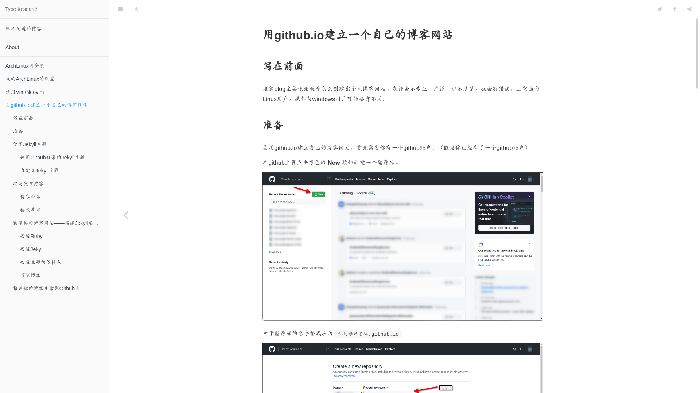

用github.io+jekyll建立一个自己的博客网站
Table of Contents
1. 用github.io+jekyll建立一个自己的博客网站
1.1. 写在前面
这篇blog主要记录我是怎么（使用Jekyll）创建出个人博客网站。或许会不专业、严谨、讲 不清楚，也会有错误，且它面向Linux用户，操作与windows用户可能略有不同.
本篇的效果并非现在的博客样式，当时使用jekyll搭建，现在使用emacs to http手动搭建
1.2. 准备
要用github.io建立自己的博客网站，首先需要你有一个github账户。（假设你已经有了一 个github账户）
在github主页点击绿色的 New 按钮新建一个储存库。

Figure 1: 创建仓库
对于储存库的名字格式应为 你的账户名称.github.io

Figure 2: 仓库名称
1.3. 使用Jekyll主题
1.3.1. 使用Github自带的Jekyll主题
在仓库创建后你可以在仓库界面的 菜单 -> Settings -> Pages 界面中点击按钮 Choose a theme

Figure 3: 界面位置
并选择一个Jekyll主题并提交更改形成一个初始的界面
1.3.2. 自定义Jekyll主题
1.4. 编写发布博客
1.4.1. 博客命名
根据Jekyll官方文档的要求，博客文件应当放置在 仓库根目录/\posts/ 文件夹下,以
YEAR-MONTH-DAY-title.MARKUP 的格式对文件进行命名。推荐使用markdown编写blog。
1.4.2. 格式要求
我个人建议使用Markdown编写博客，最好搭配markdown预览功能使用。
下面的内容均使用Markdown编写博客，其他的请自行查找教程
博客的头部应该有以下内容：
--- title: 这里填写文章的标题，填了就不用写一级标题了 author: 用户，我不太清楚它有什么用 date: 博客的编写时间（YYYY-MM-DD），填写了时间就会安装文件内部的时间来生成网页（而非文件名） category: Jekyll （我不知道它有什么用） layout: post （必不可少的内容，标识文件的类型为博客，否则本地预览时一般会出现问题：没有应用主题） cover: 标识文章的封面图像 ---
其中， layout: post 十分重要，如果文章里没有它，那么（本地预览）打开文章时不会
应用主题到上面去（至少我测试时是这样的）
而 date: YYYY-MM-DD 日期也不止是可以这样，你还可以写成 date: YYYY-MM-DD
HH-MM-SS +8000 的形式。即包括时间及时区（+8000是时区）。如果当前日期时间在文章
标注的时间前是不会构建文章的内容为html的
封面有无图像效果对比：

Figure 4: 无封面
Figure 5: 有封面
1.5. 预览你的博客网站——搭建Jekyll运行环境
由于博客网站推送到远程再进行构建会有一定的延迟，有时甚至不会更新， 因此在本地搭建Jekyll的运行环境是有必要的
1.5.1. 安装Ruby
在ArchLinux安装：
sudo pacman -S ruby
在Debian/Ubuntu
sudo apt install ruby
1.5.2. 安装Jekyll
gem install jekyll
1.5.3. 安装主题的依赖包
因为不同的主题会使用到不同的包，会有不同的依赖，具体的可以查看项目目录下的 =Gemfile=，里面会有一些类似于下面的内容
gem "jekyll" gem 'jekyll-feed' gem 'jekyll-readme-index' gem 'jemoji' gem 'webrick'
基本上安装文件中的引号中的包（名）就不会报错
gem install xxx #xxx为包名，需自行替换
不知道为什么，我运行jekyll预览时会报错，含有
webrick等字样 查了半天才找到了解决办法：bundle add webrick
1.5.4. 预览博客
在终端执行命令：
jekyll serve
顺带一提，想要在本地创建一个默认的jekyll博客项目，就在终端执行：
jekyll new 你的项目名称（文件夹）不过这样可能会有一些慢
1.6. 推送你的博客文章到Github上
在一篇blog写完后就可以执行
git add --all #添加所有文件 git commit -m "你想要给这一次提交做的注释" #进行提交 git push #推送更新到Github上
将更新推送到github上，等待一会之后你的博客网页 （应为你的仓库名，如https://your_user_name.github.io）就应会刷新